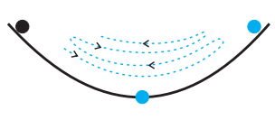
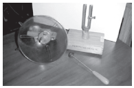

Oscilatorul mecanic
În secolul al XVI-lea, Galileo Galilei cronometra oscilația unui candelabru din Catedrala din Pisa cu
ajutorul propriului său puls. El constata că mișcarea acestuia este din ce în ce mai puțin amplă, datorită
forțelor de rezistență întâmpinate la înaintare. În natură apar multe tipuri de oscilații. De la vibrația corzilor
vocale la cea din corzile și tuburile instrumentelor muzicale, de la ticăitul ceasurilor clasice, la legănatul
în balansoare, de la mișcarea de agitație termică care duce la încãlzirea ceștii în care s-a turnat ceai fierbinte,
la mișcările scoarței terestre în timpul seismelor, avem de-a face cu existența unei surse de oscilație.
De câte ori o forță acționează asupra unui corp scoțându-l din poziția de echilibru stabil, acesta va oscila
sub acțiunea unei forțe de revenire până la restabilirea ei.
Atunci când deplasarea față de poziția de echilibru este
micã, forța de revenire depinde liniar de deplasare (într-o aproximaþie destul de bună) și oscilația se numește armonică fiind descrisă cu ajutorul funcțiilor
armonice „sinus” sau „cosinus”.
Exemple:
1. O bilă metalică este lăsată liberă la marginea
unui recipient semisferic. Ea va efectua o mișcare oscilatorie, în jurul poziției sale de echilibru stabil, aflate
în poziția cea mai joasă a recipientului.

Forța care va readuce bila spre poziția de echilibru
este componenta tangențială a greutății sale, Gt, care reprezintă cauza acestei oscilații.
2.
Alt oscilator este diapazonul lovit cu un ciocănel de lemn. Vibrația pe care o produce se va
propaga prin aerul atmosferic, din aproape în aproape, dând naștere la ceea ce numim undă sonoră. Oscilația diapazonului
din imagine, acordat pentru a emite nota LA, a fost înregistrată spre a fi „vizualizatã” cu ajutorul unui
microfon (exploratorul sonic din imagine) cuplat cu o placă de achiziție de semnal, instalată într-un computer. Amplitudinea semnalului înregistrat este
proporțională cu amplitudinea oscilației diapazonului.
Sistemele reale oscilează amortizat: amplitudinile scad treptat din cauza acțiunii
forțelor de frecare și a forțelor de rezistență la înaintarea prin mediu.
Mișcările oscilatorii pot fi întâlnite în tehnică, în
timpul funcționării unor mașini precum ciocanul pneumatic, ciocanul hidraulic etc. Motoarele vehiculelor grele produc trepidații ale pieselor componente,
ale pereților clădirilor pe lângă care trec. Efectele distructive ale trepidațiilor trebuie împiedicate prin utilizarea de amortizoare.